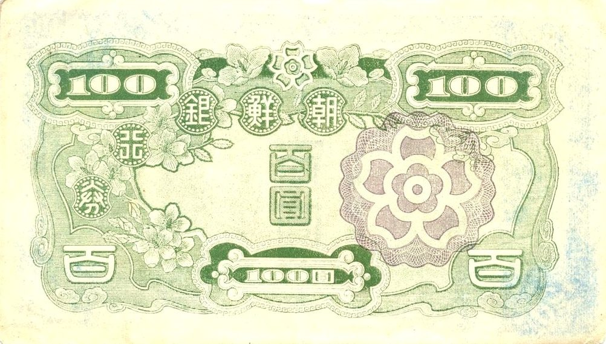
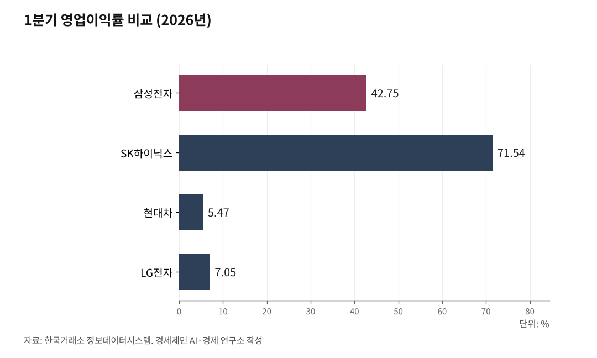

[코스피 9000 번외]
AI시대 나도 '주식가치(밸류에이션, valuation)' 평가해 투자하는 방법
밸류에이션은 기관과 외국인의 자였다, 이제 개인도 같은 자를 든다
같은 6월 1일 시장에서 삼성 PER 28배와 두산 514배, 18배 차이
측정은 AI가 빠르게, 검증은 사람이 1차 자료로
[사진①] 증권사 단말기 화면에 뜬 기업 재무지표. PER, PBR, ROE가 한눈에 보이는 화면.

주식을 처음 시작하는 사람은 대개 남이 좋다는 종목을 따라 산다. 정작 그 종목의 값이 싼지 비싼지는 따져보지 못한 채 뛰어든다. 주식에서 가장 어려운 일은 종목을 고르는 게 아니라 고른 종목의 값을 가리는 일인데, 이것을 밸류에이션(valuation), 곧 주식가치 평가라 부른다.
이 평가는 오래도록 기관과 외국인의 몫이었고, 잴 줄 아는 쪽이 먼저 사고 못 재는 개인이 뒤늦게 따라붙었다. AI 시대에 들어 개인도 같은 잣대를 손에 쥐게 됐으니, 무엇을 어떤 자로 재는지만 익히면 그 격차를 좁힐 수 있다.
주가가 높아도 싼 주식이 있다
흔히 싸다, 비싸다를 주가의 높낮이로만 따진다. 그러나 주가가 높아도 싼 주식이 있고 낮아도 비싼 주식이 있어서, 만 원짜리가 비싸고 백만 원짜리가 쌀 수도 있다.
한 해 버는 이익에 견주면 백만 원짜리가 오히려 헐하고, 가진 재산에 견주면 만 원짜리가 거품일 수 있다. 그 둘을 가려내는 일이 바로 밸류에이션이다.
삼성전자는 6월 1일 34만9000원에 거래를 마쳤고 어떤 종목은 만 원도 안 된다. 그러나 가격표만으로는 어느 쪽이 싼지 알 수 없고, 회사가 버는 이익과 가진 자산에 견줘봐야 비로소 드러난다.
좋은 회사라도 비싸게 사면 손해를 보고 평범한 회사라도 싸게 사면 이익이 남는다. 결국 종목의 이름이 아니라 값이 수익을 가르기에, 밸류에이션이 투자의 급소가 된다.

기관만 들던 자, 이제 개인도 든다
기관과 외국인은 전담 애널리스트와 유료 데이터, 분석 모델을 갖추고 기업을 직접 찾아가 두꺼운 보고서를 받아 봤다. 개인은 재무제표를 어디서 찾을지, 어떤 숫자를 봐야 할지조차 막막했고 정보도 도구도 시간도 모자랐다.
종목 하나를 제대로 보려면 공시를 내려받아 숫자를 옮기고 경쟁사 자료를 따로 찾아 견줘야 했는데, 그렇게 며칠을 씨름하는 사이 주가는 이미 움직여 있었다. 개미가 늘 한발 늦은 데는 이런 정보 비대칭이 자리 잡고 있었다.
AI는 바로 그 격차를 좁힌다. 재무제표를 긁어 지표를 계산하고 5개년 추이를 정리하며 경쟁사와 한 줄로 세우는 일을, 예전 같으면 며칠 걸릴 일을 몇 초 만에 해낸다.
전망의 전제까지 따져 묻고 모르는 개념을 그 자리에서 풀어주니, 잰다는 행위 자체가 개인에게 열린 셈이다. 기관만 들던 자를 이제 개인도, 나도 든다.
무엇을 재는가, 핵심 지표
밸류에이션은 한두 숫자로 끝나지 않지만, 처음 손에 익혀야 할 셋이 PER과 PBR, ROE다. PER(주가수익비율)은 주가를 1주가 한 해 버는 이익으로 나눈 값으로, 10배면 지금 버는 속도로 10년 만에 본전을 뽑는다는 뜻이라 낮을수록 싸다.
PER은 다시 두 갈래로 갈린다. 지나간 1년 이익으로 잰 것이 최근 4분기 PER이고, 앞으로 벌 이익을 추정해 잰 것이 선행 PER이라, 이익이 빠르게 느는 회사는 두 값이 크게 벌어진다.
PBR(주가순자산비율)은 주가를 회사 재산에서 빚을 뺀 순자산으로 나눈 값이어서, 1배 아래면 회사를 지금 팔아도 주가보다 더 건진다는 뜻이다. ROE(자기자본이익률)는 주주가 맡긴 돈으로 한 해 얼마를 벌었는지를 나타내며, 15% 이상이 꾸준하면 강한 신호이고 8% 아래면 경고다.
[사진②] 재무제표를 띄운 노트북과 그 옆에서 지표를 정리하는 손. AI 분석 화면이 함께 보이면 좋다.
같은 주도주도 지표로 재면 갈린다
시장이 주목하는 주도주라고 다 같은 값은 아니다. 6월 1일 장마감 지표로 세 종목을 재보면 결이 뚜렷이 갈린다.
삼성전자는 그날 10.09% 올라 34만9000원에 마치며 시가총액 2040조원으로 단일 종목 첫 2000조원을 넘었다. 지난 1년 이익으로 잰 PER은 28.21배로 싸 보이지 않지만, 폭증할 올해 이익을 반영한 선행 PER은 8.10배로 내려가고 1분기 매출 133조8734억원에 영업이익 57조2328억원으로 영업이익률이 42.75%, 분기 ROE가 19.16%에 이른다. 주도주이면서 미래 기준으로는 가장 싸다.
SK하이닉스는 그날 236만3000원에 마쳤고 수익성이 압도적이다. 1분기 ROE가 61.16%, 영업이익률이 71.54%로 매출 52조5763억원에 영업이익 37조6103억원을 남겼고 선행 PER은 7.90배로 역시 싸다. 다만 PBR이 9.94배로 자산 대비 무겁고, 이 수익성이 사이클 최고점의 것일 수 있다는 경고가 나란히 따른다.
현대차는 그날 3.73% 올라 75만원에 마쳤다. PBR이 1.64배로 글로벌 판매 3위 완성차치고 무겁지 않고 배당성향 27.72%에 주당 1만원을 돌려준다. 다만 1분기 영업이익률이 5.47%, ROE가 8.41%로 수익성이 셋 중 낮고 영업이익이 전년 1분기보다 30.8% 줄어 이익 둔화가 약점이다.
세 종목을 가른 것은 인기가 아니라 지표다. 잴 줄 알면 같은 주도주 안에서도 미래 이익이 받쳐주는 종목과 수익성이 받쳐주는 종목, 값은 가벼우나 이익이 꺾인 종목이 비로소 구분된다.
PER 514배가 보내는 경고
같은 6월 1일 시장에 정반대 쪽이 있다. LG전자는 그날 상한가로 29.86% 뛰어 38만500원에 마쳤다.
지난 1년 이익으로 잰 PER이 70.20배에 ROE는 4.11%에 그치는데, 현재가는 증권가 평균 목표주가 16만6750원의 두 배를 웃돈다. 1분기 영업이익률도 7.05%여서, AI 가전과 로봇 기대가 실적을 한참 앞질러 값을 밀어 올렸다.
두산은 더 멀리 갔다. 6월 1일에도 11.71% 올라 220만3000원에 마쳤는데, PER이 514배에 PBR 17.85배, ROE는 4.99%다. 이익 1원을 514원 주고 사는 셈이다.
다만 두산은 자회사를 거느린 지주회사라 연결 실적 특성상 PER이 부풀려 잡힐 수 있다. 그럼에도 세 자릿수 PER은 성장 기대가 가격에 지나치게 선반영됐다는 위험 신호로 읽는 게 원칙이다.
삼성전자와 두산은 같은 날 같은 시장의 종목인데도 지난 1년 이익으로 잰 PER이 28.21배와 514배로 18배 넘게 벌어져 있다. 앞으로 벌 이익으로 재면 삼성전자는 8.10배까지 내려간다. PER만 보면 둘 다 오른 종목으로 묶이지만, ROE를 나란히 대고서야 한쪽은 싼 주도주, 다른 쪽은 비싼 위험주로 갈린다.
AI는 측정, 검증은 사람
AI는 이 지표들을 빠르게 추려준다. 종목 이름만 넣으면 수치를 정리하고 모르는 개념을 풀어주며 경쟁사와 나란히 견줘주니, 예전 같으면 며칠 걸릴 일을 몇 분에 끝낸다.
다만 측정과 판단은 다르다. AI는 옛 수치를 끌어오거나 단위를 틀리기도 하고 가끔은 그럴듯한 거짓 숫자를 지어내니, 한국거래소 자료나 금융감독원 전자공시 같은 1차 자료로 대조하는 일이 빠질 수 없다.
지표가 좋다고 주가가 곧장 오르는 것도 아니다. 시장이 외면하면 싼 채로 오래 머물고, 기대가 식으면 비싼 종목은 먼저 무너진다.
밸류에이션은 미래를 점치는 일이 아니라 지금 값이 싼지 비싼지를 따지는 일이다. 그 일에 쓰는 자를 누가 드느냐가 달라졌을 뿐, 끝내 사느냐 마느냐를 정하는 것은 사람의 몫이다.
※ 이 기사는 AI 프로그램 클로드 오푸스 4.8을 활용해 작성했다. 본 기사는 투자 참고자료이며 최종 투자 판단과 책임은 투자자 본인에게 있다. 자본시장과 금융투자업에 관한 법률상 투자자문이나 투자권유에 해당하지 않는다.
참고문헌
참고문헌
- 한국거래소, 「개별종목 투자지표(PER·PBR·ROE)」, 한국거래소 정보데이터시스템, 2026년 6월 1일 종가 기준. https://data.krx.co.kr/contents/MDC/MDI/mdiLoader/index.cmd?menuId=MDC0201020502
- 금융감독원, 「전자공시시스템(DART)」, 금융감독원. https://dart.fss.or.kr
- 삼성전자, "삼성전자, 2026년 1분기 실적 발표", 삼성전자 뉴스룸, 2026년 4월 30일. https://news.samsung.com/kr/%ec%82%bc%ec%84%b1%ec%a0%84%ec%9e%90-2026%eb%85%84-1%eb%b6%84%ea%b8%b0-%ec%8b%a4%ec%a0%81-%eb%b0%9c%ed%91%9c
- 현대자동차, "현대차, 2026년 1분기 경영실적 발표", 현대자동차그룹 뉴스룸, 2026년 4월 23일. https://www.hyundaimotorgroup.com/ko/news/hyundai-motor-company-2026-first-quarter-earnings
- 설동협, "SK하이닉스, 1분기 영업익 37.6조 '역대 최대'…'영업이익률 72%'의 기적", 머니투데이방송(MTN), 2026년 4월 23일. https://news.mtn.co.kr/news-detail/2026042308165476912
- 이은주, "[The Numbers] 'SK하이닉스 목표주가 300만원'…메모리 밸류에이션 리레이팅 본격화", 뉴스스페이스, 2026년 5월 7일. https://www.newsspace.kr/news/article.html?no=13839
- 배한님, "삼성전자 주가 34만원 넘어 신고가…단일종목 최초 시총 2000조 돌파", 머니투데이, 2026년 6월 1일. https://www.mt.co.kr/stock/2026/06/01/2026060110515494802
- 이규연, "코스피 8600 돌파, AI 기대 업은 LG그룹주 연일 불기둥", 비즈워치, 2026년 6월 1일. https://news.bizwatch.co.kr/article/market/2026/06/01/0008
사진 출처
· [대표사진] The Government of the United States of America, "100 Yen or 100 Won - US Army Administration (1946) 07.jpg", 위키미디어 공용, 퍼블릭 도메인, https://commons.wikimedia.org/wiki/File:100_Yen_or_100_Won_-_US_Army_Administration_(1946)_07.jpg
© 경세제민 AI·경제 연구소. 인용할 때는 출처를 밝혀 주십시오.